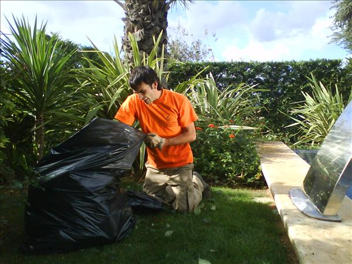

Para disfrutar de un bello jardín debemos tener dedicación y empeño, dándole ciertos cuidados para mantenerlo siempre limpio y ordenado. Veamos estas recomendaciones que son fáciles de realizar.
Limpieza del Jardín
1) Cortar la maleza. En primer lugar, eliminar todas las malas hierbas. En este sentido, podría ser útil contar con una cortadora de césped, en el caso de grandes jardines o una desbrozadora cuando se trata de pequeños jardines o dimensiones ricos (cercas, muebles, mesas, juegos infantiles…).
2) Elimine las plantas secas. Debemos recoger todas las hojas secas que cortamos, ya que si las dejamos en el suelo impedirán que el césped respire.
3) Eliminar todas las plantas leñosas o dañado.
4) Limpie las calzadas.
5) En invierno con frío y las heladas muchas plantas se estropean. Aunque no pienses en volver a plantar debes limpiar y retirar las plantas viejas para una correcta limpieza de jardines.
6) Si tienes animales en casa se recomienda recoger las heces y después darle un riego de esa manera evitamos posteriores olores.
7) Uso de fertilizantes. Una forma muy eficaz de tener el césped más verde es utilizar fertilizantes. Hay una gran variedad que seguro podrás encontrar en cualquier tienda de jardinería
8) Cuándo abonar el césped. Lo ideal es abonar el césped en las estaciones más frescas y moderadas. Por ello, es recomendable, sobre todo, fertilizar el césped sobre la mitad del otoño para darle más fuerza al césped y resistencia.
9) Es conveniente no cortar demasiado el césped. El secreto de un césped verde es que la tierra debe mantener la humedad.
10) Riego del césped. Como sucede con todos los vegetales, plantas y flores, debes regar el césped. Al parecer, es mejor regar el césped uniformemente, durante un par de horas una vez por semana que hacerlo todos los días por algunos minutos. Lo ideal es darle la humedad justa.